Situation 3 - Introduction au PowerShell

Prérequis

Ducumentation en ligne : https://cubdocumentation.sioplc.fr
Adressage
| Service | Nombre d’hôtes | Adresse réseau | Masque de sous-réseau | Adresse de diffusion | Description VLAN |
|---|---|---|---|---|---|
| Production | 120 | 192.168.6.0 | 255.255.255.128 | 192.168.6.127 | VLAN 56 |
| Client 1 | 32 | 192.168.6.128 | 255.255.255.192 | 192.168.6.191 | VLAN 10 |
| Administration systèmes et réseaux | 6 | 192.168.6.192 | 255.255.255.240 | 192.168.6.207 | VLAN 20 |
Schéma logique – Agence Frankfur

Packet tracert - Agence Frankfurt

1. Réponse aux questions de la situation - Intoduction au PowerShell1 :
La sensiblité à la casse de PowerShell
PowerShell n’est pas sensible à la casse par défaut : variables, cmdlets et paramètres fonctionnent quelle que soit la casse. Pour les comparaisons de chaînes, certains opérateurs sont insensibles (-eq, -like) et d’autres sensibles (-ceq, -clike).
En clair, les majuscules et/ou minuscule auront aucune incidence sur vos commandes !
1.1 Connectez-vous en SSH puis exécuter et vérifier la version de Powershell
Une fois connecter en ssh, il faut se mettre en Powershell :
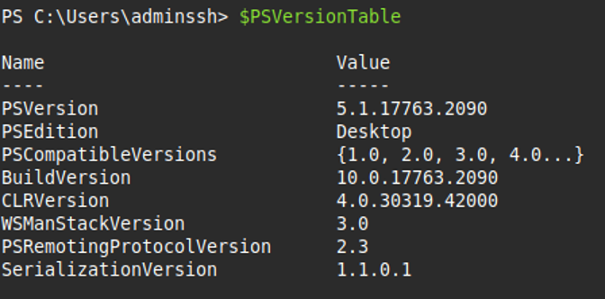
1.2 Comment visualiser sur votre terminal que Powershell est bien exécuter
Si vous visualiser "PS" comme sur l’image ci-dessous, alors vous êtes en PowerShell :
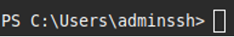
1.3 Afficher l’ensemble des alias contenus dans PowerShell
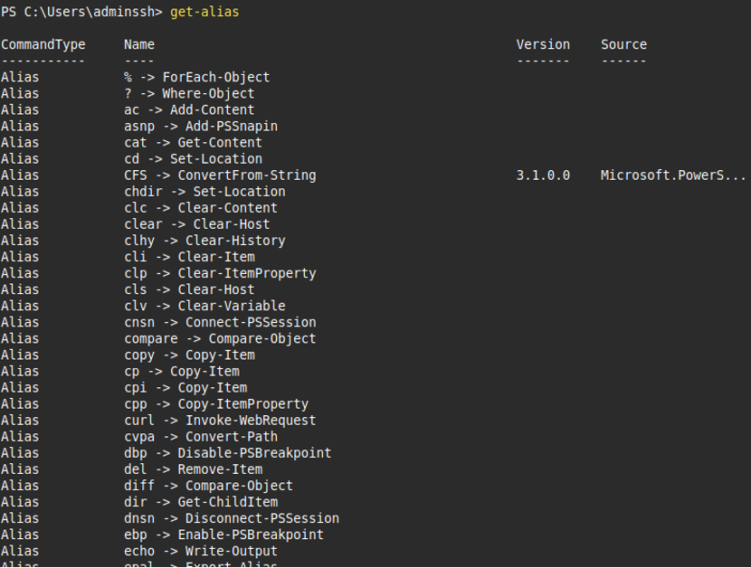
...1.4 Afficher l’aide pour l’utilisation de la commande clear –host
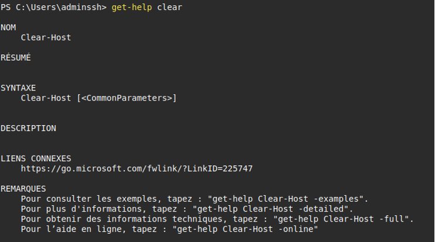
1.5 Quels sont les trois types de commande pouvons-nous retrouver dans les commandes disponibles de PowerShell
Commande : get-command 1. Alias 2. Function 3. Cmdlet
1.6 Tester la commande Get-History, quel est l’intérêt d’utiliser cette commande ?
La commande Get-History affiche la liste des commandes exécutées dans la session PowerShell.
Elle permet de retrouver, réutiliser ou analyser les commandes précédentes, ce qui fait gagner du temps et facilite le suivi du travail effectué.
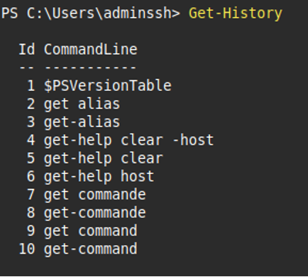
1.7 Afficher la liste des processus en cours d’exécution sur le serveur Windows2019.
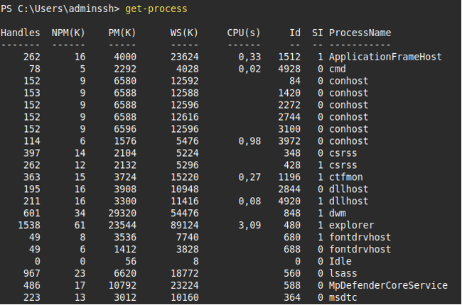
1.8 Retrouver les commandes permettant d’afficher page par page la liste des commandes disponible sur PowerShell
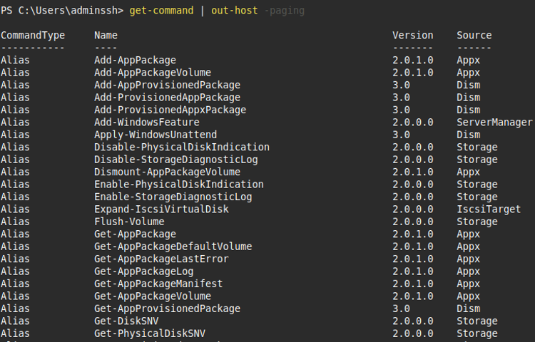
1.9 Retrouver et tester les commandes permettant de lister, de démarrer et d’arrêter les services.
Lister le service "Spooler" :
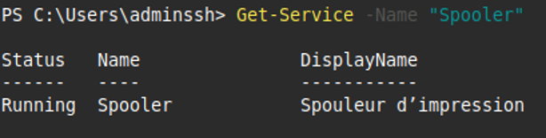
Démarrer le service "wuauserv" :
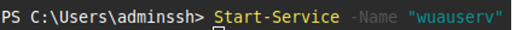
Arrêter le service "wuauserv" :
1.10 Créer en ligne de commande le dossier « procédures »
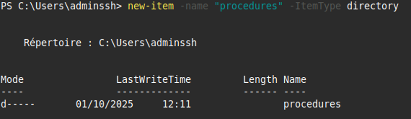
1.11 Créer avec une commande PowerShell un fichier nommé « liste des procédures.txt »
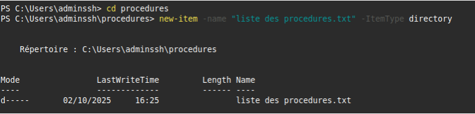
1.12 Ajouter les deux lignes suivantes dans le fichier nommé « ListeProcédures.txt »
- Administration à distance sécurisée
- Commandes Powershell
Add-Content -Path ".\ListeProcédures.txt" -Value "Administration à distance sécurisée"
Add-Content -Path ".\ListeProcédures.txt" -Value "Commandes Powershell"
1.13 Réaliser une copie du fichier « ListeProcédures.txt » vers un nouveau fichier de sauvegarde nommé « ListeProcéduresSauvegarde.txt »
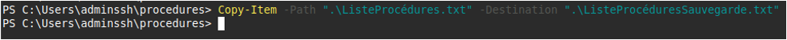
-
Windows PowerShell est un interpréteur de ligne de commande Windows spécialement conçu pour les administrateurs système. Windows PowerShell inclut une invite interactive et un environnement de script utilisables indépendamment ou conjointement.
Windows PowerShell introduit le concept d'applet de commande, outil en ligne de commande simple, à fonction unique, intégré dans l'interpréteur de commandes. Vous pouvez utiliser chaque applet de commande séparément, mais la puissance de ces outils simples s'exprime pleinement quand vous les combinez pour effectuer des tâches complexes. Windows PowerShell inclut plus d'une centaine d'applets de commande de base. ↩